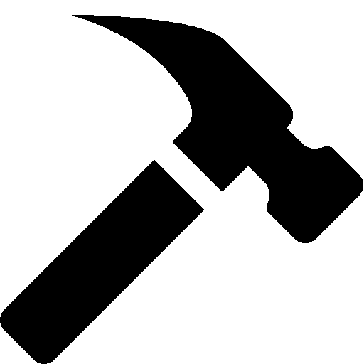

>
Habilidades especiales
Dormir mas de 14 horas
Chuparme la nariz
Gustos
Dormir
Comer
Me gustan las cajas
Experiencia Laboral
Supervisor de estructuras estables para ¨Cajas S.A¨
Cazador de moscas a domicilio
Mascota de compañia
Influencer felino
Catador de piensos
Premios
MSNBC nombró a Grumpy Cat el gato más influyente de Grumpy Cat
ganó el Premio al Meme del Año de BuzzFeed en los Premios
Webby el primer premio Golden Kitty en la segunda edición
del Festival de Filme de Videos de Gatos de Internet y el
Premio a la Exitosa Trayectoria en los Friskies

 gatoalegre@gmail.es
gatoalegre@gmail.es  123456789
123456789